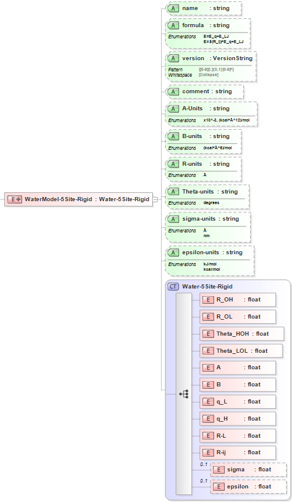

11.3. 5Site-Rigid Water Model¶
11.3.1. Functional Form¶
The 5Site-Rigid water model has the functional form:
\(E={{E}_{q}}+{{E}_{LJ}}\)
or alternatively:
\(E=S\left( {{R}_{ij}} \right){{E}_{q}}+{{E}_{LJ}}\)
The force-field parameters for this potential and units are given by:
Equation Symbol |
Parameter Definition |
Units |
\(E_{q}\) |
Charge potential energy |
energy |
\(E_{LJ}\) |
Lennard-Jones potential energy |
energy |
\(S\left( {{R}_{ij}} \right)\) |
Switching function |
N/A |
11.3.2. XML Schema¶
The XML schema for the 5Site-Rigid water model has the following representation (design mode representation using Liquid XML Studio):
The general sub-elements (the actual data set) are given by:
Parameter Definition |
Schema Notation |
Distance between O and H |
R_OH |
Distance between O and M |
R_OL |
Angle between HOH |
Theta_HOH |
Angle between LOL |
Theta_LOL |
Lennard-Jones parameter |
A |
Lennard-Jones parameter |
B |
Charge of L |
q_L |
Charge of H |
q_H |
R_L |
|
R_ij |
|
sigma |
|
epsilon |
The general attributes (describing the entire data set) are given by:
General Attributes |
Cardinality |
Value/Definition |
name |
Required |
The name |
formula |
Fixed |
E=E_q+E_LJ |
version |
Optional |
Version number of parameter set |
comment |
Optional |
Comment attached to data set |
A-units |
Required |
Enumerations specified in schema |
B-units |
Required |
Enumerations specified in schema |
R-units |
Required |
Enumerations specified in schema |
Theta-units |
Required |
Enumerations specified in schema |
sigma-units |
Required |
Enumerations specified in schema |
epsilon-units |
Required |
Enumerations specified in schema |
Note that an XML document will be rejected from being entered into the WebFF database if a required attribute is left unspecified.